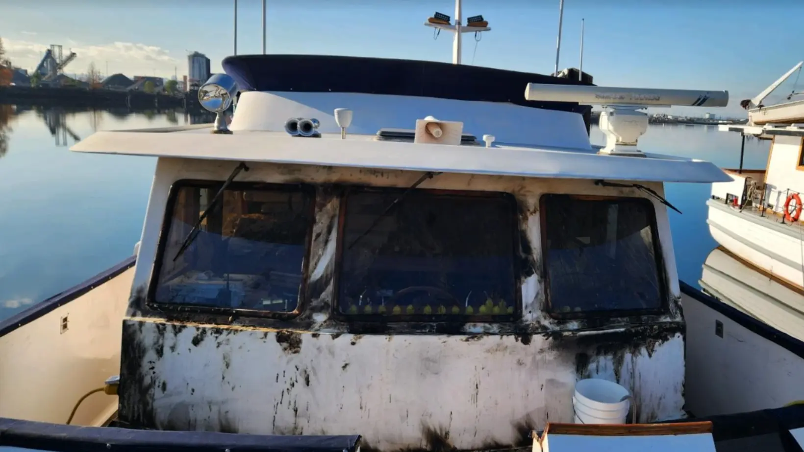

Why Solar?
On a cool November morning, a 50-foot Ocean Alexander named "Dos Mas" rested quietly in its Puget Sound slip while its owners enjoyed their coffee in Arizona, fifteen hundred miles away.
A couple nearby at the South Tacoma Marina noticed something was wrong first. A burning plastic smell drifted through the air. They looked up and saw smoke rising from the pilot house of Dos Mas. By the time they put on their shoes and grabbed a dock hose, flames had fully engulfed the polyester window coverings and the canvas over the bridge bench.
Neighbors extinguished the fire before it spread beyond the boat's exterior. When the fire department arrived, they traced the cause to an arcing shore power cord that had ignited the canvas cover over the bridge settee, which then spread to the window coverings.
The destruction was swift, and the cost was staggering. The fire burned large holes through the gelcoat and fiberglass. The fire charred the teak window frames surrounding three windows beyond repair, and cold water from the emergency response shattered all three.
After a full assessment, the insurance company set the total cost of damage at $95,000. Five minutes of fire. Nearly a full year of repairs before Dos Mas returned to its original condition.
Did Dos Mas actually need 110 volts of shore power while sitting at the dock?
The DC battery bank powered the bilge pumps. The only other electrical demand was a few low-voltage dehumidifiers. Two 100-watt solar panels and a smart solar charger would have kept the batteries topped off and everything running safely.
No shore power cord. No arc. No fire.
See the complete DIY solar kits that keep your batteries charged without ever needing shore power.
Shop Solar Kits →